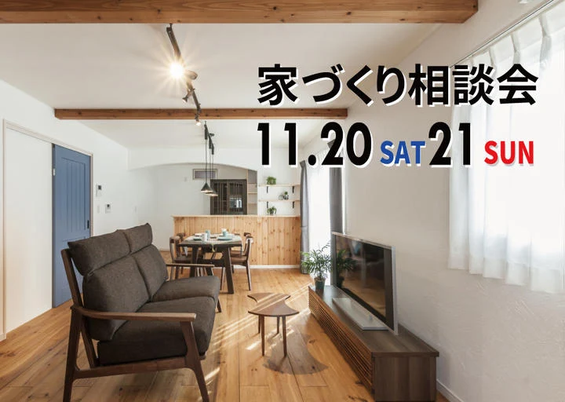

イベント情報
知らないと損をする!?家づくり相談会
詳しいご案内
日程・価格・募集内容などは、掲載当時の情報です。
11月20日（土）・21日（日）の2日間
高岡市内免で「家づくり相談会」を開催します。
相談会の会場は、健康を第一に考えた「自然素材」に囲まれた空間。
室内に足を踏み入れた瞬間に『空気の違い』を全身で体感できます。
是非この機会にご自身の "五感" を使って、その違いをお確かめください。
アイノスの「家づくり相談会」
健康のことを第一に考えると辿り着く「自然素材」という答え。
「家づくりで重視すること」は、建てる人の価値観によって様々ですが、家族の健康を第一に考えた場合、「化学物質を極力避けた『自然素材』一択」というのが、長年かけてたどり着いたアイノスの答えです。
でも、「自然素材の家は高価」というイメージを持つ方が多く、自然素材で建てたいけれど諦めている方も多くいらっしゃるように見受けられます。
今の暮らしを少しだけ見直して、「家づくり」と「貯蓄」の両者を実現する裏技など、知ってる人だけが得をする情報満載で、家づくりのお悩みを解決します。
開催概要
- 開催日時
- 11月20日(土),21日(日)
- AM10:00～PM5:00
- 開催場所
- 富山県高岡市内免

新型コロナウイルス感染症
拡大防止の対応について
フジ創アイノスでは、モデルハウス、イベント会場において、お客様に安心してご来場いただくために、マスクの着用・手洗い・アルコール消毒・高頻度接触部位の消毒・換気等の徹底を行い、可能な限りの対策を心掛けております。
また、ご来場に関しましては、不特定多数の方で混み合う状況を避けるため、見学会・相談会・セミナー等の開催イベントにつきましては、事前予約をおすすめします。ご来場を希望される方は、WEB予約、お電話でのご予約をお願い致します。